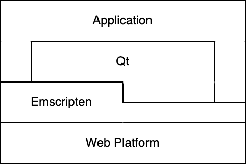

The 6.4 release makes Qt for WebAssembly a supported platform. In this post we'll take a look at how to port an existing application to this platform, using the Slate pixel art drawing app as an example. Slate is a Qt Quick-based application; Qt for WebAssembly supports Qt Widgets as well.
Porting may not be the right word to use here. Depending on the nature of the application it might run on WebAssembly without modifications, in which case building for WebAssembly would be a better term. Usually there is something to fix or adapt to the platform, though.
The layer diagram for an application using Qt on the web looks like this: 
There are a couple of things to take note of here. First, we are building on the "Web" platform and ignore everything below, since web browsers will abstract this away from us. Second, Emscripten has a thick and a thin layer. This reflects the different ways to use it: as a provider of the libc & POSIX platform implementation and as an interface layer to the web platform. Finally, Qt is in the center (this is a Qt blog after all) but does not cover all functionality the app might need.
We'll skip over the very basics here, head over to the Emscripten documumentation and the Qt documentation which covers these topics. I reccomend starting with something simpler than a complete application, for example by building small "hello world" app first.
Qt for WebAssembly differs from the other platforms Qt supports in that the app runs in the web browser sandbox. This places restrictions on the applcation, such as limiting access to local files and local fonts. We’ll tackle some of those here in the process of porting building Slate for the web.
The modifcations to Slate have not been upstreamed to the main repo yet, and are currently available here. The utility functions used are published separately at Qt Web Utils.
Qt for WebAssembly builds use static linking, are without thread support by default, and are 32-bit builds. For Slate the latter two were unproblematic, however at startup it greets us with the following error:
I usually fall back to a static desktop build of Qt on any sort of plugin loading error (this requires building Qt from source, which is arguably easier to do if you are doing that all day anyway), and then debug from there using the desktop host debug tools. Having a successful static desktop build does not guarantee that the WebAssembly build will work, however if the static desktop build does not work then there is little hope for the wasm build.
In the case of Slate the issue was that it has a slightly custom project layout which was preventing the static build logic from finding and linking to an internal QML component. I fixed this by making a small change to the build system, though I doubt if this specific fix will be relevant in many other cases.
With that in place Slate builds and runs successfully to the point where it is usuable as a pixel drawing app. Next, we are going to take a look at several adjustments for the web platform.
The slate file menu has some desktop-isms which do not neccesarily make sense on the web. For example, users do not quit a web app using the "Quit" menu item, instead they close the tab. Also, "Save" and "Save as" can be combined to a single menu item.
This can be implemented by testing for the "wasm" platform at run-time, and then hiding the superflous menu items by setting visibility to false and the height to zero. (Remember to hide the menu separators as well!)
Menu { readonly property bool isWebPlatform: Qt.platform.os == "wasm" MenuItem { text: qsTr("Quit") visible: !isWebPlatform height: visible ? implicitHeight : 0 } }
QFile and friends are available also on WebAssembly, with an important caveat that the files operated on by this API are stored on the in-memory file system provided by Emscripten, which means that any data written with QFile is lost after the user navigates away from the app.
Widgets-based applications may use QFileDialog::getOpenFileContent() which covers this use case. That API returns the content of the opened file as a QByteArray. This works out well for C++ code, but not so well for QML code which works with file Urls.
Qt does not have a built-in solution for QML appliactions yet, but we can make one. The apprach will be to save a copy of the file to the in-memory file system, and then give the path to that file to QML code. We can build on top of the existing getOpenFileContent() API (which requires linking against widgets), or on top of the private API in QtGui (but don't tell anyone).
The implementation is available as a helper function in the QtWebUtils repo. Usage in Slate looks like the following:
MenuItem { objectName: "openMenuItem" text: qsTr("Open") onTriggered: { if (Qt.platform.os == "wasm") { WebUtils.loadFileToFileSystem("*.slp", "/tmp/tmploadfile.slp", function(tmpFilePath) { loadProject("file://" + tmpFilePath) } ); } else { openProjectDialog.open(); } } }
Slate has a fullscreen button. On desktop platforms, this uses the QWindow::setWindowState() API to transition the window in and out of fullscreen when clicked. This does unfortunately not work out of the box on WebAssembly, since the Qt window is embedded in the web page and does not control the browser window. We need to find a different solution.
The web platform provides API for transitioning the browser window in and out of fullscreen state, which is relatively easy to call from C++ using emscripten::val. If you are unfamiliar with emscripten::val, then the short description is that it provides support for accessiong the DOM and native JavaScript API from C++ code.
#include <emscripten/val.h>
void toggleFullscreen()
{
using emscripten::val;
const val document = val::global("document");
const val fullscreenElement = document["fullscreenElement"];
if (fullscreenElement.isUndefined() || fullscreenElement.isNull())
document["documentElement"].call
We’d like to warn the user if they are about to lose unsaved data when closing the application. On the web this can happen if the user closes the tab or the browser window, and also if they navigate away using the forward or back buttons.
The beforeunload event fires in these cases. Web pages can make the browser prompt the user before close by adding an event listener to this event. The recommended practice is to connect to beforeunload only if we actually want to block tab close, so that's what we do.
The wording of the dialog fixed and determined by the browser, in order to prevent the web page from impersonating the browser.
#include <emscripten/val.h>
#include <emscripten/bind.h>
void beforeUnloadhandler(emscripten::val event)
{
// This event handler does not need to take any action in order to display the
// confirmation dialog; calling preventDefault() and setting event.returnValue
// is sufficent.
event.call
With this Slate should be a usable web application with the usual web app properties; users can access it without installing anything (other than a browser), developers can push application updates directly to all users without any intermediate steps such as app store reviews or code signing requirements.